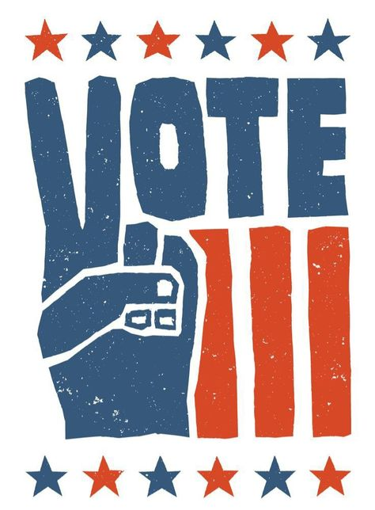

Your vote is more than just a mark on a ballot. It represents your voice, your values, and your vision for the world you want to live in. Every election is an opportunity to influence the decisions that shape your community, your country, and generations to come.
Take time to think about what truly matters to you. Think about the kind of leaders you want to trust with the power to create change. Don't let emotions, peer pressure, or trends decide your choice. Instead, reflect on the facts, consider the bigger picture, and choose the leaders who align with your vision for a better tomorrow, a better future.
Making an informed vote is a powerful vote. It is a choice guided by knowledge and purpose. When you take the time to think critically, you become part of something greater, a citizen who values truth, responsibility, and progress. Encourage those around you to think carefully before they make their decisions. When we all vote with understanding and purpose, we create a stronger, more meaningful democracy. Your vote carries weight. Make it count.
